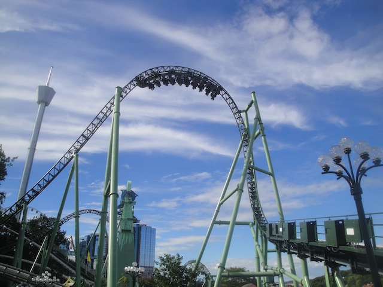

| |
Helix Review

Today, we'll be reviewing Helix. This is a custom made coaster by Mack built specifically for Liseberg. Yeah, it's another one of their launched coasters. Those are really fun rides and all, but Helix is the best one. Helix is a very...interesting and unique ride. If you just stop and look at the ride, you can see why people like it. This ride is massive and it's incredibly loopy. Honestly, Helix is up there for one of the coasters with the most cartoonish look. It looks very much like a roller coaster in a cartoon would look. There's just so many loops and inversions everywhere. It's very much got a doodle-like design. So this should be interesting. Let's see what all Helix has to offer. We hop in the seats, pull down the lap bar, and away we go. The ride starts with a small drop out of the station. Wee. We then immedietly head into a corkscrew. Wow. The ride has barely begun, and we're already going upsidedown. Better get used to it. The ride has 7 inversions, but honestly, it feels like it has way more as I've been on many coasters with 7 inversions that don't feel NEARLY as loopy as Helix. Maybe it's because it's a unique layout, or that the inversions are far more floaty than most inversions. For instance, this corkscrew honestly reminds me of the Jojo Roll found on Hydra. OK, it's not nearly as slow and it doesn't have that same hangtime. But it is a floaty inversion out of the station. And it's not just a corkscrew, it sort of has a downward helix that it just leads straight into. This leads us into a banked turn and BAM!!! We're off into a launch. Yeah, it's not the most intense launch in the world, but it's still a launch none the less. WEE!!!! And this leads us straight into another corkscrew. It's not quite as floaty as the one right out of the station, but it's still a very floaty corkscrew. In this one, it's almost like you're not going upsidedown, but rather, the world around you is flipping upsidedown. It's a very cool feeling. We head out of the corkscrew and head around another banked turn. This leads us straight into an airtime. No, it doesn't offer crazy ejector air (If that's what you want, go ride Balder just across the park), but it does provide a nice little pop of airtime. We then head down into a curved drop. Hey, I'm totally down for that. And hey, it gives us some good speed. We then head what appears to be a Pretzal Knot loop. Yeah, there aren't many coasters with this kind of inversion. We twist on up, flip down to the ground. Loop back up into the sky, and then thread the original inversion, making a pretzal shape. WARNING: NERDY COASTER COMPLAINT AHEAD. Now after looking on RCDB. Apparently, this isn't a Pretzal Knot, but rather, this is a Norwegian Loop. Uh, have you seen this inversion? It's not a Norwegian Loop. Look at Speed Monster. Now THAT is a f*cking Norwegian Loop. This is NOT a Norwegian Loop. It's clearly a Pretzal Knot. I thought they were pretty much a dead element mainly found on the now defunct Moonsault Scramble that used to reside at Fuji Q (that looked like an interesting ride. I wish it still existed so I could ride it). I thought it was just on that and that Helix brought it back. But nope. There's also one on Banshee @ Kings Island (I'm really overdue to go back to that park). And I'm sorry, but that thing is a Pretzal Knot. It looks like one (Seriously, go look at the photo I have of it in my ride photos at the bottom of the review. It looks just like the Prezal Knot on Banshee), and it certainly doesn't look or even really feel like a Norwegian Loop. Sorry, I know most people don't give a sh*t. End of Nerdy Coaster Complaint. In keeping with the spirit of Helix, it's a fairly floaty inversion that just is a ton of fun. We then head into an airtime hill that may not provide anything crazy like Balder, but it's still a lot of fun. WEE!!! AIRTIME!!! We then head straight into a Zero G Roll. Now this inversion actually winds up having some whip to it, but it's still more on the floaty side. There's nothing really agressive about the ride. But it's still cool that this Zero G Roll has some bite. It is more forceful than say...the Zero G Roll on Silver Bullet. We then go through a quick bank and WOW!!! We get some good laterals here. Again, nothing crazy, but Helix is starting to have some bite. This is getting even better. We then head down a curved drop low to the ground. We then up a curved turn back up and through a couple more swoopy turns. This leads us into the second launch. Except this launch is...weird. It honestly, doesn't even feel like a launch. It feels like they just decided to build the next inversion, which seems to be a mix between an Inside Top Hat (These things seriously need to be more popular. Can Intamin please make a Rocket Coaster where instead of an outside Top Hat, they do an Inside Top Hat instead) and an Immelmann Loop. It starts out like an Inside Top Hat, but doesn't turnaround, and just sort of unwinds like an immelmann from there. It's a very floaty inversion, and you truly feel upsidedown going through it. Anyways, the launch to it doesn't even feel like it was designed to really increase the feelings of acceleration. This launch feels like it was solely designed because they wanted that inversion to be after those floaty turns, but the ride was going way too slow to make it through a big inversion like that, so they went the RCT route and added a launch so that the train could make it. Cause really, the entire launch feels like the launch is just there to push and guide the train up into the inversion because once we're upsidedown, we have lost all of the speed, and when we exit the inversion, we are pretty much going the exact same speed that we were travelling at before. So it feels like that entire launch is just there to solely accomadate that inversion (which is fine. It is a very fun inversion). We then head into another airtime hill. Yay!!! Floating out of our seats with some good airtime and...OH SH*T!!! THERE'S A DROP HERE!!! We actually gain some speed and are going much faster now. It's definetly more powerful than that 2nd launch. We then head up another curved hill, and go through some curvy S bits that actually give us some good laterals. Nothing too crazy as we've lost some speed coming back up the hill, but it's still some decent laterals. We then head around a banked turn, getting a really nice view of Lisebergbanan, and head straight into an inline twist. Now this really gives us some decent hangtime. It's a lot of fun. And there we go, right into the brake run. And yeah. Helix is great! I know some people will put it in their Top 10 Lists, and yeah. I won't go that far, but it really is a great ride. Honestly, I'd call Helix Variety: The Ride. It has EVERYTHING. Drop out of the station, launch, airtime, hangtime, laterals, positive Gs, out of control feelings, enough inversions to where I stopped counting, and on top of all that, it's a LONG ride. I seriously think Helix is up there as one of the longest coasters (time wise, not counting lifthills, brake runs, or boring bits) in the world. I remember hearing the park representitives talk about how Helix wasn't meant to be the most intense coaster out there, but the best coaster they could possibly design, to maximize fun and not be too intense so people could ride it over and over and over again, and honestly, that's EXACTLY how I thought of the ride. So Liseberg really hit it out of the ballpark with Helix. I can't think of a coaster that achieved it's main goal more flawlessly. It's not the most intense coaster ever, even if it looks like something out of a cartoon, but it's just a ton of fun. So while I can understand people being frustrated with the ride because it's not an intense coaster, I also can see just why people like the ride as much as they do. Highly recommend giving it a ride or two if you ever go to Liseberg.
9/10
Location: Liseberg
Opened: 2014
Built by: Mack
Last Ridden: June 22, 2014
Helix Photos





Home
|